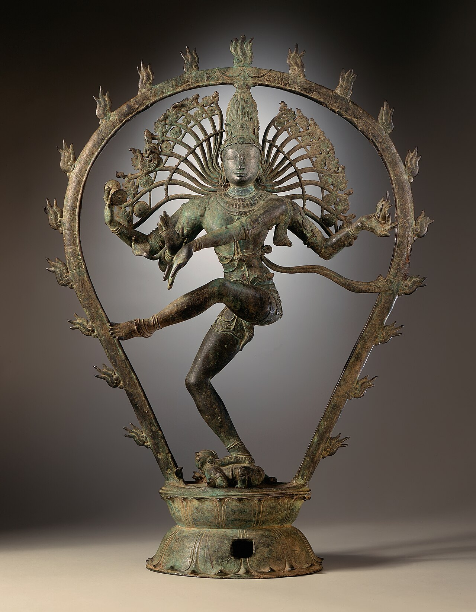

Wikimedia Commons · Public domain ⇗
Sthala Puranam
The Thillai Nataraja temple at Chidambaram, near the sea-belt of Tamil Nadu, is the space (Akasha) element of the Pancha Bhoota shrines, and its holiest sanctum is literally the empty hall of space.
Explanation
The innermost sanctum, called the Chit Sabha (hall of consciousness), holds no ordinary linga: an enclosure and a garland of bells over a vacant space stand for the Akasha (ether, space) element — the Chidambara Rahasya, the secret of the consciousness behind all form. Shiva here is Nataraja, the cosmic dancer, whose 108 karanas (dance postures) are carved in the walls of the hall, and whose dance is held to be the very heartbeat of creation. The temple is the great seat of Shaiva Siddhanta and of the classical dance tradition of Bharatanatyam, which has its roots in this sacred ground. The Patanjali sage and Vyagrapada (the tiger-footed saint) are remembered beside him.
Why the temple is revered
Chidambaram is the Akasha-sthal, the shrine of pure space; its rahasya teaches that the divine is formless and present everywhere. It is the supreme Shaiva seat of the South — the 'Kashi of the South' — and the cradle of dance, where art, mysticism and the five elements unite. The gilded roof and the sacred space of the Chit Sabha make it the most conceptual of the Pancha Bhoota darshanas.
🕉 Story
Chidambaram is the space (Aakasha) element sthal. The temple is renowned for its worship of Shiva as Nataraja, the Lord of Dance, symbolising the cosmos in motion.
✨ Significance
One of the five Pancha Bhoota temples and a great centre of Shaiva Siddhanta and Bharatanatyam.